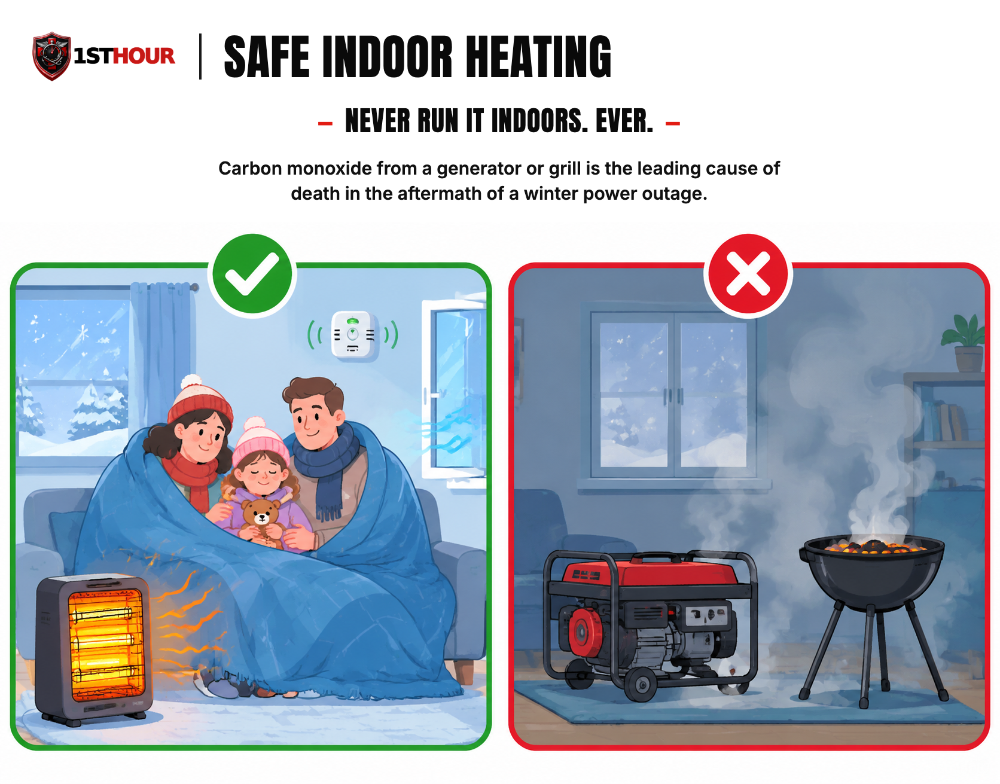
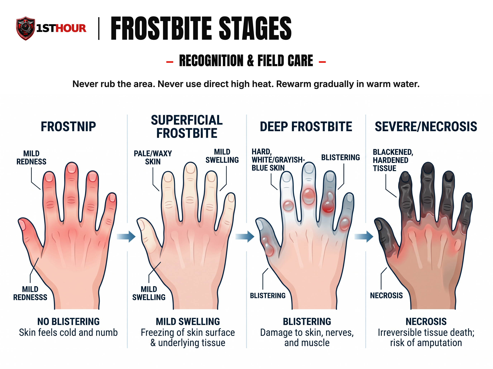

Ice Storm & Winter Grid Failure
What to do when the power goes out in a hard freeze — hypothermia and frostbite recognition and care, safe heat without electricity, and getting through the days that follow without becoming a second casualty of the storm.
1. Why the First Hour (and the Days After) Matter
An ice storm that takes down the power grid is really two emergencies stacked on top of each other, and they move at completely different speeds. The first is fast: a body losing heat to cold, wet, or wind can develop dangerous hypothermia or frostbite within the first hour, sometimes faster, and the difference between mild cold discomfort and a medical emergency can come down to how quickly you recognize what's happening. The second is slow: the power may stay out for days, and the choices made in the first hour — how you heat your home, whether you drive anywhere, whether you check on the people nearby who need help — determine how safely you get through everything that follows.
This book treats both timelines as equally real. It isn't a standalone medical guide, and it isn't a standalone outage-preparedness guide — it's the intersection of the two, written specifically for the scenario where a hard freeze and a power outage hit at the same time, which is exactly when an ice storm tends to happen.
2. Hypothermia Recognition
Hypothermia is what happens when the body loses heat faster than it can produce it, and core body temperature drops below the level needed for normal organ function. It doesn't require an arctic blast — a cold, wet, windy night in the 40s can cause it, especially indoors without heat, in wet clothing, or in an older adult or young child whose body regulates temperature less efficiently. Recognizing which stage someone is in changes how urgently you need to act.
| Stage | What you'll see | What it means |
|---|---|---|
| Mild | Persistent shivering, cold and pale skin, mild confusion or clumsiness, faster breathing and heart rate | The body is still actively fighting to generate heat — this is recoverable with the steps in Section 3 |
| Moderate | Shivering becomes intense, then starts to fade; slurred speech, stumbling, drowsiness, confusion or irritability, fumbling hands | Core temperature is dropping further; the body's ability to compensate is starting to fail |
| Severe | Shivering stops entirely, muscles become stiff or rigid, breathing and pulse become slow and weak or hard to find, the person becomes very confused or loses consciousness, skin may look blue or gray | A medical emergency — the body has stopped trying to warm itself, and cardiac arrest is a real risk |
Call 911 for any suspected moderate or severe hypothermia. For mild hypothermia in an otherwise healthy, alert adult, the steps in Section 3 combined with getting to a warm environment are usually sufficient — but if the person doesn't improve within a reasonable time, or you're unsure which stage you're looking at, treat it as the more serious case and call for help.
3. Hypothermia Rewarming Technique
The instinct with someone who's dangerously cold is to warm them up as fast as possible — a hot shower, a heating pad pressed against the skin, a seat right in front of a space heater. For mild hypothermia in an alert, otherwise healthy person, gentle warming is fine. For moderate-to-severe hypothermia, rapid or aggressive rewarming is actively dangerous, not just unhelpful, and this section exists to make that distinction impossible to miss.
- Get the person out of the cold and out of any wet clothing. Move them somewhere sheltered from wind and precipitation. Cut clothing off rather than pulling it over the head/limbs if that causes rough movement — see the handling note below.
- Dry the skin gently and wrap in dry insulation. Dry blankets, sleeping bags, or dry clothing layered over the person, including under them if the ground or floor is cold — insulate from both directions.
- Rewarm gradually, using the body's own heat and passive insulation — dry blankets, body-to-body contact from another person (skin-to-skin under shared blankets, for severe cases, is a recognized field technique), a warm (not hot) room. The goal is a slow, even rise in core temperature, not a fast one.
- If the person is fully alert, able to swallow normally, and shows no signs of moderate or severe hypothermia, warm (not hot) sweet, non-alcoholic, non-caffeinated drinks can help. Do not give anything by mouth to anyone who is confused, drowsy, or has any trouble swallowing — the aspiration risk is real and the calorie benefit is not worth it.
- Handle the person gently, and minimize rough movement or jostling, especially in moderate-to-severe cases. A cold heart can be prone to a dangerous rhythm disturbance, and rough handling has been documented as a trigger. Move them as you would someone with a suspected spinal injury: careful, deliberate, no sudden repositioning.
- Call 911 for any moderate or severe hypothermia and continue passive rewarming while you wait. If the person has no detectable breathing or pulse after checking carefully for up to a minute — a hypothermic pulse can be extremely slow and faint — and you're trained in CPR, begin it and follow dispatcher instructions.

4. Frostbite Recognition & Field Care
Frostbite is the freezing of skin and underlying tissue, most common on fingers, toes, ears, nose, and cheeks — the parts of the body with the least insulation and blood flow. It progresses through recognizable stages, and how far it's progressed changes exactly what to do.

Frostnip
Numbness, tingling, and redness. No ice crystals have formed in the tissue yet. Fully reversible with rewarming.
Superficial
Skin looks pale, waxy, or grayish-white. May feel firm on the surface but soft underneath. Blistering with clear fluid can appear hours after rewarming.
Deep
Skin is hard, cold, and feels wooden all the way through — not just on the surface. Blood-filled blisters can form. Significant tissue damage is likely.
Severe / Necrosis
Tissue turns blackened and hardened as it dies. This stage needs emergency medical/surgical care — field rewarming alone will not reverse it.
What to do
- Get out of the cold and remove wet or constrictive clothing and jewelry from the affected area before it swells further.
- Rewarm gradually in warm — not hot — water, roughly 99–102°F / 37–39°C (comfortably warm on your own unaffected skin, never hot to the touch). Use a thermometer if you have one; if not, err toward the cooler end of that range rather than guessing warmer. Soak the affected area continuously for 15–30 minutes until it feels warm and looks flushed/red, not until it's just "not cold" anymore.
- Protect blisters and don't break them. Loosely cover the area with clean, dry, non-adherent dressing or cloth once rewarmed.
- Get emergency medical care for any deep or severe frostbite, and for any superficial frostbite that doesn't clearly improve after rewarming. Frostbite that has caused blistering or hardened tissue needs a clinical evaluation — this is not a wait-and-see injury past the frostnip stage.
Frostbite and hypothermia often occur together — check for both whenever you find one.
5. Safe Indoor Heating Without Power
Never run these indoors, for any reason, even briefly:
- A gasoline, propane, or diesel generator — not in a basement, not in a room with the windows open, not "just for a minute" to warm up.
- A charcoal or propane grill — indoors, in a garage, or on an enclosed porch. Grills produce CO exactly like generators do.
- A camp stove or portable propane heater rated for outdoor use only — check the rating before assuming any fuel-burning device is safe indoors; most are not.
- A gas stove or oven used to heat a room. This feels like an obviously available option during a cold outage, which is exactly why it's a leading cause of indoor CO poisoning during them.
- Any of the above in a garage or shed, even with the door fully open. An open garage door does not ventilate exhaust fast enough — CO can accumulate to lethal levels inside the garage and drift into the attached house.
✓ Safe indoor options
- Layered clothing, blankets, and sleeping bags — the first line of defense, before any heat source
- Closing off and gathering in one small, well-sealed room rather than heating the whole house
- Battery-powered or rechargeable electric space heaters and heated blankets, used per their manufacturer instructions, away from flammable material
- A permanent, professionally installed, code-compliant fireplace or wood stove that was already part of the home before the outage — never one improvised during one — with a clear, unblocked flue and a working CO detector nearby
✗ Never indoors
- Generators, grills, and camp stoves — see the list above
- Gas ovens/stovetops used as room heaters
- Any device rated "outdoor use only"
- An improvised fire, fire pit, or chiminea brought inside — even temporarily
Safe placement for any fuel-burning device you do use
- Place it outdoors, in the open air, at least 20 feet from your home in every direction, and at least 20 feet from any neighboring structure — further if wind is blowing exhaust toward a building.
- Point exhaust away from your home and any windows, doors, or vents — yours or a neighbor's.
- Never run it under an awning, tarp, or any covered structure even if it's freestanding and outdoors.
- Install battery-powered or battery-backup carbon monoxide detectors inside your home — on every level, near sleeping areas — and test them before you need them.
- If a CO alarm sounds, get everyone outside into fresh air immediately and call 911 — do not go back inside to search for the source or open windows first.
This guidance is the same standard used in the Grid-Down / Extended Power Outage protocol's own generator-safety section — the rule doesn't change because the outage happens to be caused by ice instead of a storm or grid failure from another cause. If you've read that book, treat this as the winter-specific extension of the exact same rule, not a different one.
6. Driving & Travel Decisions in Ice Conditions
Most winter-storm injuries and deaths that aren't cold-injury-related happen in vehicles. The single best decision is often the one that doesn't involve driving at all.
When to stay off the roads entirely
- Any active ice storm warning or advisory covering your route
- Visible ice on trees, power lines, or your own vehicle's exterior surfaces before you've even started the engine
- Any trip that isn't genuinely necessary — "I can probably make it" is not the same question as "do I need to go"
- Bridges and overpasses specifically — they freeze first and lose traction before the rest of the road surface does, even when the road itself looks clear
If travel is unavoidable, keep this in the vehicle
- Blankets and extra warm layers — for everyone in the vehicle, in case you're stranded.
- Food and water — enough to last well beyond your expected travel time.
- Phone charger or battery power bank — a dead phone removes your ability to call for help.
- Flashlight and extra batteries — for visibility and signaling.
- Sand, salt, or cat litter, plus a small shovel — for traction if you get stuck.
- Ice scraper and jumper cables — basic winter-driving equipment that's easy to forget until you need it.
If you become stranded
- Stay with the vehicle. It's far easier for rescuers to spot a car than a person on foot in a storm, and the vehicle provides shelter from wind and precipitation.
- Call or text 911 with your location as precisely as you can describe it, and let them know you're staying with the vehicle.
- If you run the engine for heat, first make sure the exhaust pipe is completely clear of snow and ice. A blocked tailpipe can force carbon monoxide back into the cabin — the same CO risk from Section 5, just in a smaller enclosed space. Check the exhaust pipe before every time you restart the engine, not just once.
- Run the engine and heater for about 10 minutes each hour to conserve fuel and limit exhaust exposure, and crack a window slightly whenever it's running for additional ventilation.
- Signal your location. Tie a brightly colored cloth to the antenna or a partially rolled-down window, and use hazard lights sparingly to conserve the battery.
- Move your arms and legs periodically to keep circulation going without leaving the vehicle, and huddle together with other passengers for shared body heat.
7. Checking on Vulnerable Neighbors
A winter grid-down event puts some people at dramatically higher risk than others, and they're often within a few doors of you. Knowing who's vulnerable before the outage happens — and having a plan to check on them — is one of the highest-leverage things you can do in the first hour and the days after.
- Older adults living alone often have less internal heat-regulation capacity, may not notice or report how cold their home has gotten, and may be reluctant to ask for help. A knock on the door costs you nothing.
- Anyone medically dependent on powered equipment — oxygen concentrators, home dialysis, CPAP machines, powered wheelchairs, refrigerated medication — faces a second emergency layered on top of the cold one the moment their backup battery runs out. If you know a neighbor fits this description, find out their plan (backup battery runtime, whether they need to relocate to a powered facility) before the outage, not during it.
- Families with infants or young children — see Section 8 for why infants are at elevated hypothermia risk specifically.
- Anyone without a reliable way to call for help if their phone dies and they have no backup power — a simple in-person check may be the only way anyone finds out they need it.
8. Special Situations
Infants
Infants lose body heat much faster than adults relative to their size, and can't generate heat by shivering the way older children and adults do. They also can't tell you they're cold. Watch for cold-to-the-touch skin (especially the chest and abdomen, not just the hands and feet, which are cold on a healthy infant too), unusual lethargy, weak cry, or refusal to feed — any of these in a cold environment warrants immediate warming and, for anything beyond mild chill, a call to 911 or the infant's pediatrician.
Older adults
In addition to the reduced heat-regulation capacity noted in Section 7, some medications commonly used by older adults can mask the early signs of hypothermia (reduced shivering response) or affect judgment about how cold they actually are. Don't rely on an older adult's own self-report of "I'm fine" as the only signal — check skin temperature and mental clarity directly.
Pets
Bring pets indoors during an ice storm outage whenever possible — the same cold that endangers people endangers them, and "they have fur" is not reliable protection for most household pets in genuinely cold conditions. If a pet must go outside briefly, limit exposure time, and check paws for ice buildup or road-salt irritation afterward. Never leave a pet in a parked vehicle in cold weather — a car loses heat quickly and offers no more protection than the outdoors once the engine is off.
9. Essential Items Checklist
Everything in this protocol assumes certain supplies are within reach before the cold and the outage hit at the same time. Run through this list before you need it.
- Extra blankets and sleeping bags rated for cold weather — Section 3. The core tool for passive, gradual rewarming.
- Battery-powered or rechargeable space heater — Section 5. The only heat source with zero CO risk.
- Battery-powered carbon monoxide detector(s) — Section 5. Non-negotiable if you own or might ever use any fuel-burning device.
- Warm water source or way to heat water safely — Section 4. For frostbite rewarming at a body-safe temperature.
- Battery bank / phone charger — Sections 6 & 7. Keeps you able to call 911 or check in on neighbors.
- Vehicle winter kit (blankets, food, water, sand/litter, ice scraper) — Section 6. Assemble it before the first storm of the season, not during one.
- Flashlight and extra batteries — Section 6. For visibility, signaling, and checking on neighbors after dark.
- Layered cold-weather clothing for every household member, including infants — Sections 3 & 8. The first line of defense before any heat source.
10. Regional & Climate Notes
Ice storms and the winter grid failures that follow them are overwhelmingly a concern for northern and upper-Midwest states and any region where freezing rain, not just snow, is a regular winter feature — the freezing rain is what coats power lines and tree limbs in ice heavy enough to snap them, which is the actual mechanism behind most ice-storm outages. This book doesn't attempt a full 12-state Good Samaritan grid the way the pilot's does — geography here matters as climate risk, not legal variation, so it's framed by region instead.
Primary risk zone: the northern tier and upper Midwest (states such as Minnesota, Wisconsin, Michigan, upstate New York, New England, and the northern Great Plains) see ice storms and extended winter outages most frequently, with infrastructure generally built to expect them.
Secondary risk zone — arguably higher per-event danger: the mid-South and mid-Atlantic (Texas, Oklahoma, the Carolinas, Virginia, Tennessee) see ice storms less often, but with less winterized infrastructure and less public familiarity with cold-injury risk, a single severe event can cause outsized harm — this is exactly the region that produced some of the deadliest recent ice-storm grid failures.
Wherever you are, the medical content in Sections 2–4 and the CO-safety rule in Section 5 don't change by region — only how likely you are to need them, and how prepared your local infrastructure is to help you, does.
11. Medical Disclaimer
This guide is for general educational purposes only and does not constitute medical advice, diagnosis, or treatment, emergency management guidance, or legal advice. It is not a substitute for professional medical care, emergency medical services, your local emergency management agency's official guidance, or a certified first aid, CPR, or emergency-preparedness course, which we strongly recommend taking in person.
In any real emergency, call 911 (or your local emergency number) immediately. Nothing in this guide should delay that call.
Generator, carbon monoxide, and indoor-heating safety guidance in this book reflects general best practices (consistent with CDC and Ready.gov consumer guidance) but does not replace your specific equipment's manufacturer instructions, a licensed electrician's or HVAC professional's guidance for any permanent installation, or your local fire code.
1st Hour and its parent company make no warranty, express or implied, regarding outcomes from applying the information in this guide, and disclaim liability for actions taken based on its contents to the fullest extent permitted by law.
Editor's note: this edition reflects content as of August 25, 2026. 1st Hour periodically revises protocol guides as best practices evolve — visit 1sthourprotocols.com/iceover-event for the current edition and to re-download the latest PDF.